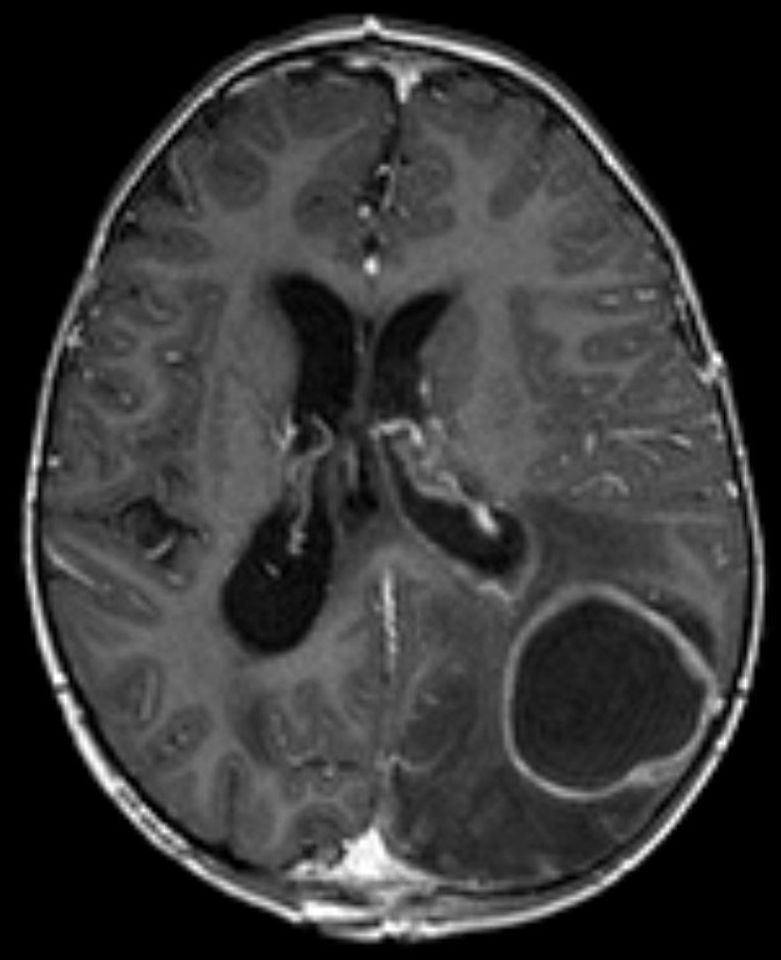

Ficha del catálogo
Absceso cerebral
- Sistema
- Nervioso
- Modalidad
- RM
- Región
- Parénquima encefálico
- Dificultad
- Intermedio
El absceso cerebral es una colección focal de material purulento dentro del parénquima, encapsulada por una pared de tejido de granulación. Puede originarse por diseminación desde un foco contiguo, como senos paranasales u oído, por vía hematógena o tras un traumatismo o cirugía. Se manifiesta con cefalea, déficit focal y fiebre, aunque esta última puede faltar.
Técnica
Resonancia magnética con difusión y T1 con contraste, que constituye la combinación diagnóstica esencial. La tomografía con contraste es la alternativa inicial en urgencias cuando la resonancia no está disponible.
Qué observar
- Lesión con realce en anillo fino, liso y regular
- Restricción marcada a la difusión en el contenido central
- Pared más delgada en el borde profundo, hacia el ventrículo
- Edema vasogénico perilesional extenso
- Foco infeccioso contiguo en senos, mastoides u oído medio
- Extensión a los ventrículos o al espacio subdural
Hallazgos
Lesión redondeada con centro hipointenso en T1 e hiperintenso en T2, rodeada de un anillo de realce fino, regular y de espesor uniforme, con notable edema circundante. El contenido central muestra restricción intensa a la difusión, con valores bajos en el mapa de coeficiente aparente, reflejo de la elevada viscosidad y celularidad del pus. La cápsula puede verse discretamente hipointensa en T2 por la presencia de radicales libres y colágeno.
Perlas
La restricción marcada del centro de una lesión con realce en anillo es el dato que mejor separa el absceso del tumor necrótico, cuyo centro suele mostrar difusión facilitada. Cuando el anillo es fino y su porción medial es más delgada, la sospecha de absceso aumenta, ya que ese borde es el que tiende a romperse hacia el ventrículo.
Diagnóstico diferencial
- Metástasis necrótica
- Centro sin restricción, anillo más grueso e irregular y lesiones múltiples en unión corticosubcortical.
- Glioblastoma
- Anillo grueso e irregular, infiltración de sustancia blanca y perfusión elevada en la porción sólida.
- Hematoma en resolución
- Productos hemáticos en secuencias de susceptibilidad, evolución de la señal en el tiempo y anillo de hemosiderina.
- Neurocisticercosis en fase coloidal
- Lesiones pequeñas y múltiples, con posible escólex visible y evolución característica hacia la calcificación.
Simuladores
- Tumor quístico con contenido proteináceo
- Infarto subagudo con realce periférico
- Cavidad posquirúrgica con sangre y detritus
Por modalidad
- TC
- Muestra la lesión con realce anular, el efecto de masa y el foco infeccioso óseo o sinusal, y es rápida en el paciente inestable.
- RM
- Aporta el dato decisivo mediante la difusión y define con precisión la extensión, la afectación ventricular y la respuesta al tratamiento.
Protocolo
Difusión con mapa de coeficiente aparente, T1 sin y con contraste, T2, FLAIR y secuencia de susceptibilidad; se recomienda incluir cortes de senos paranasales y mastoides para identificar el foco de origen.
Clasificación
La evolución se describe en cuatro fases: Cerebritis precoz, cerebritis tardía, absceso con cápsula precoz y absceso con cápsula tardía. El patrón de realce y la definición de la pared varían según la fase y condicionan la decisión entre tratamiento médico y drenaje.
Errores frecuentes
- No solicitar difusión y confundir el absceso con un tumor necrótico
- Interpretar el edema extenso como signo de malignidad
- Omitir la búsqueda del foco infeccioso contiguo en senos y mastoides

absceso cerebral realce en anillo restricción a la difusión cerebritis infección intracraneal edema vasogénico